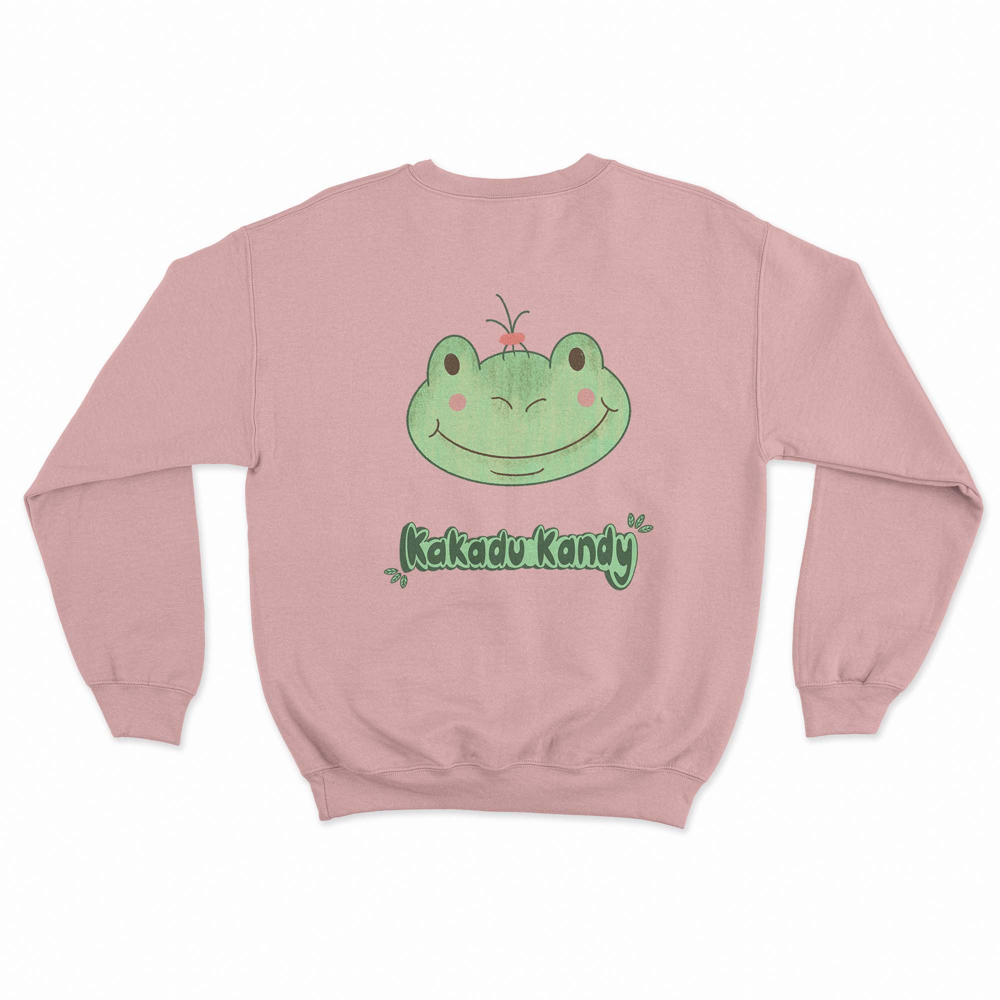
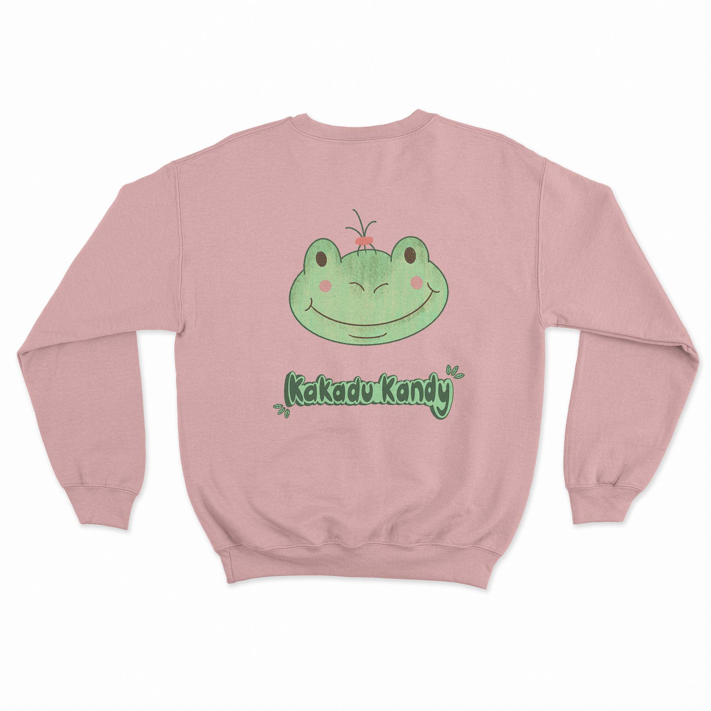
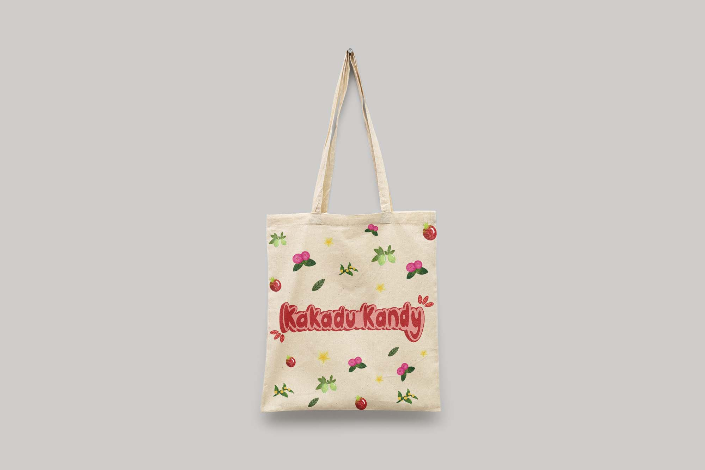
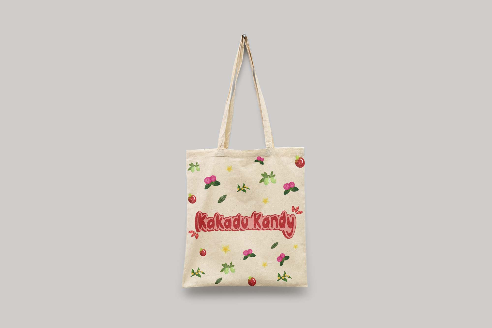
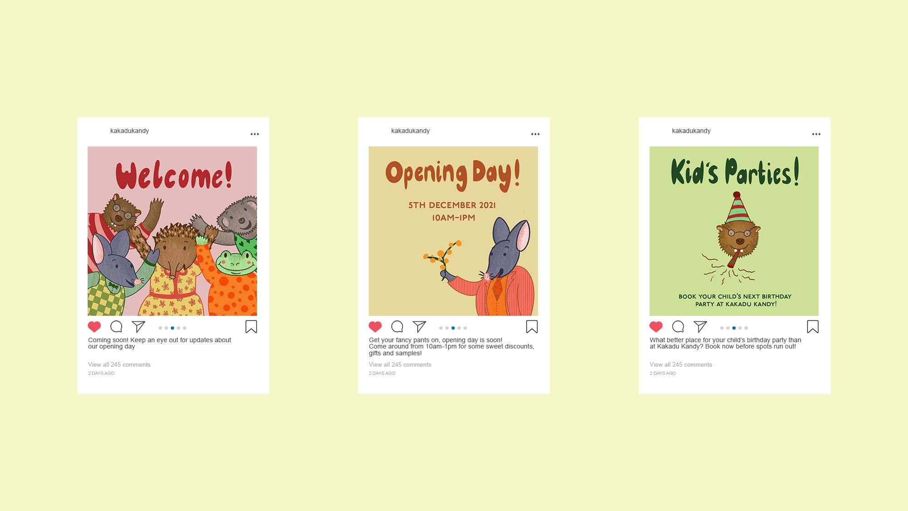
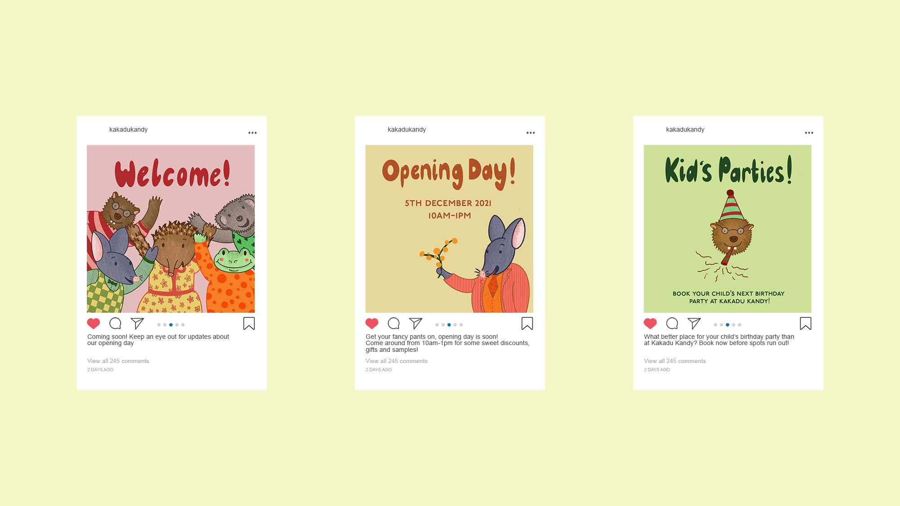
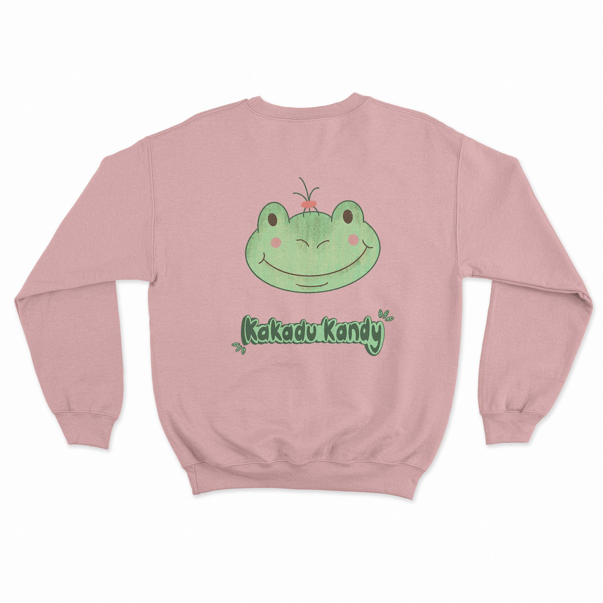
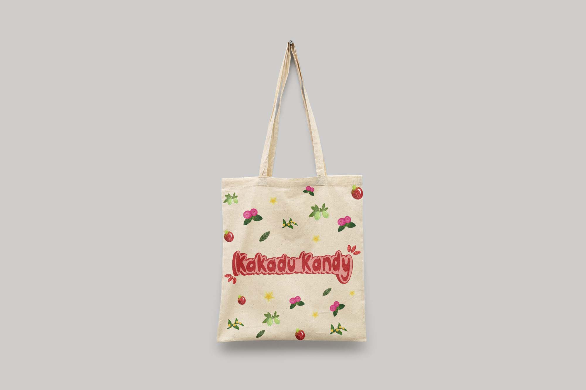
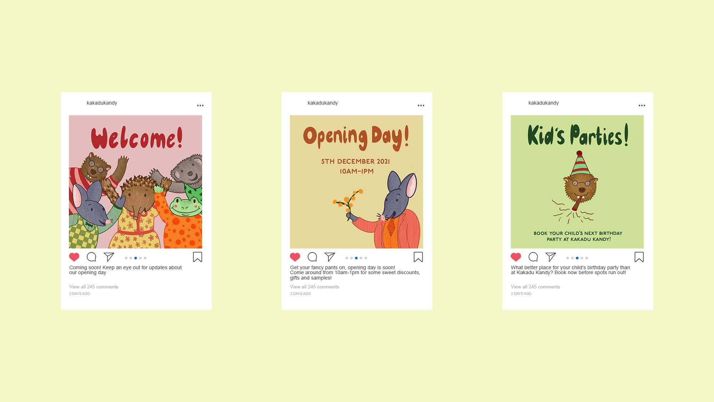

 

 

Kakadu Kandy is a hypothetical Australian confectionary store that includes native Australian bush foods into their products. The main objective of the Kakadu Kandy brand is to educate children and young people on native Australian flavours. A maily illustrative approach has been taken, through scribbly, loose, pencil textured illustrations, along with hand generated type.


